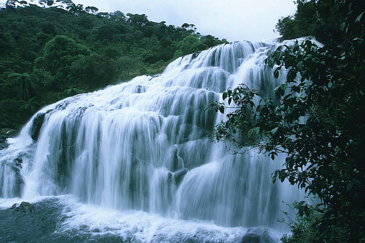
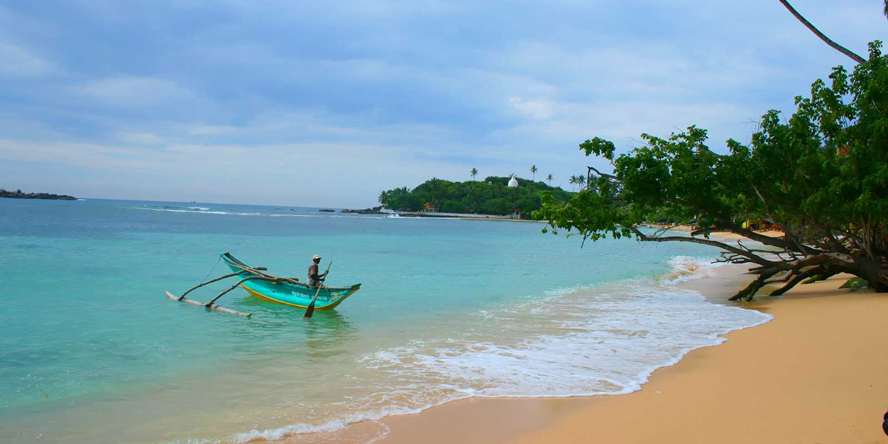
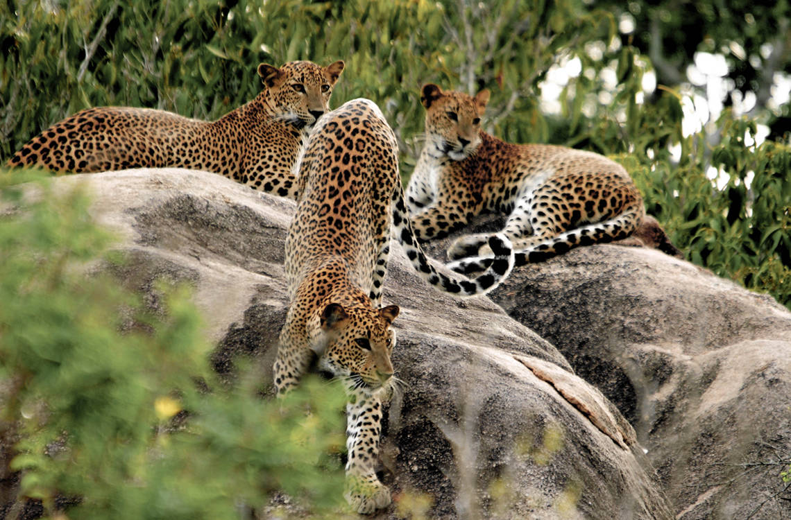
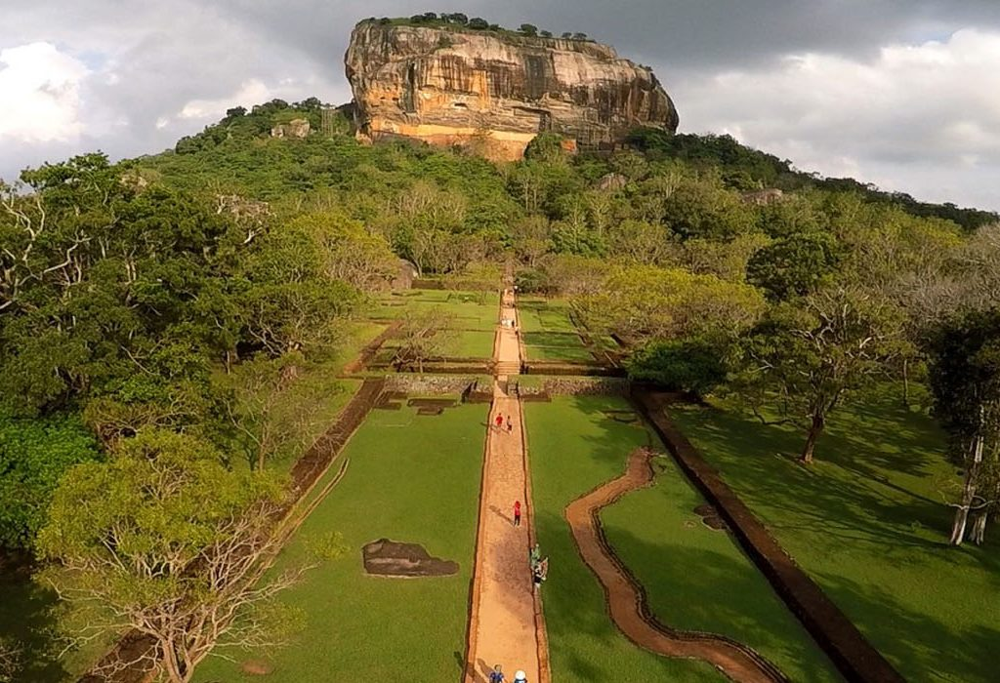
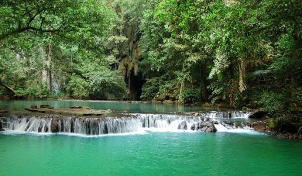

Click on the images below
Bakers Falls Located in the Nuwara Eliya district and 3 kilometres away from the main entrance of Horton Plains
national park, Baker’s falls sits majestic and stunning. Named after late Sir Samuel Baker, a very famous British explorer and game
hunter during the British colonial period, the hike to the falls yields stunning views of Horton Plains.
The hiking trail where the falls can be witnessed is called ‘Baker’s Loop’ which is part of the circular trail trekking through Horton
Plains from its entrance to World’s End. It also can be reached from Pattipola or from the town of Ohiya. From Pattipola, there is a
marked footpath that leads to World’s End and loops back to Baker’s falls.
There are plenty of local guides to help you along the way and provide you with all the information you may want to know. The waterfall
is surrounded by a thick forest, tree ferns and montane shrub. The falls exude a magnetic force which attracts every visitor to be
awestruck by its magnificence and charm.
">
">
Unawatuna Unawatuna is one of the most popular areas of Sri Lanka. Tourists on vacation like to spend their time in
the southern part of Sri Lanka, mainly because it has the most beautiful beaches in Sri Lanka. With roughly a one hour ride from the
capital city Colombo, Unawatuna’s a perfect area to stay for a few days. The town itself is small, has excellent shopping, guesthouses,
trendy restaurants, and quite some activities and sightseeing nearby. Find out about the best things to do in Unawatuna.
The main beach at Unawatuna is popular with both tourists and locals. The wide stretched beaches offer some good swimming and a
part of the beach is occupied with sunbeds to rent. On the west end of the beach, there is a little walk to a pagoda statue overlooking
the bay. The beach is directly connected to the city center with loads of little restaurants and bars. There is a great beach vibe going
on here even after sunset.
">
">
Yala National Park Yala National Park is Sri Lanka’s most popular wildlife park due to the presence of many leopards.
Sri Lanka is one of the few countries in the world where the population lives side-by-side with free-roaming animals. It isn’t uncommon
to see elephants crossing roads or sneaking into a hotel lobby – a unique and beautiful way of living. Unfortunately, there can be
negative encounters, and parks like Yala provide a safe space for the animals. Here’s everything you need to need about Yala National
Park in Sri Lanka.
An enormous part of the Sri Lankan southeast corner is Yala National Park. The park is divided into five blocks. They stretch
from the jungles inland to the beaches on the Indian Ocean. Only blocks one and five are open to the public, to preserve the
natural habitat as much as possible. Herds of elephants, crocodiles, deer, monkeys, buffaloes, birds, sloth bears, leopards and
many more. Sri Lanka has 20+ national parks but the large variety of animals is what draws many visitors to Yala National Park
specifically.
">
">
Sigiriya Lion Rock in Sigiriya is one of the most popular landmarks to visit during a route through Sri Lanka.
The natural phenomenon is an enormous (200m) square-shaped rock, a former fortress of King Kassapa. It is home to murals, gardens,
and on top of the rock: a swimming pool and palace! Lion Rock is one of the eight UNESCO World Heritage sites and is a must-visit in
Sri Lanka!
Prepare yourself for a little challenge and conquer the 1200+ steps to the top of the Lion Rock. Don’t get scared, this is an absolute
must-do in Sri Lanka! The climb is marked with good paths and stairs. The start at the terraces gardens gives you the most impressive
perspective of the rock. Once arrived at the top of rock enjoy the incredible 360 degrees view over the whole area. Every corner has
its unique view. Try to spot some areas you have just visited in Sri Lanka.
">
">
Sinharaja Forest Located in south-west Sri Lanka, Sinharaja Rain Forest is the country's last viable area of primary
tropical rainforest. More than 60% of the trees are endemic and many of them are considered rare. There is much endemic wildlife,
especially birds, but the reserve is also home to over 50% of Sri Lanka's endemic species of mammals and butterflies, as well as many
kinds of insects, reptiles and rare amphibians.
Sri Lanka's tropical rain forest, the Sinharaja is a UNESCO World Natural Heritage Site. One of the few virgin forests left in the
world. Streams, springs, rivers, waterfalls, leopard, monkeys, butterflies and moths, rare trees, valuable shrubs and medicinal herbs
are all found within its green canopy. A trek along prescribed paths would provide nature lovers with a never to be forgotten experience
of sights and sounds.
">
">